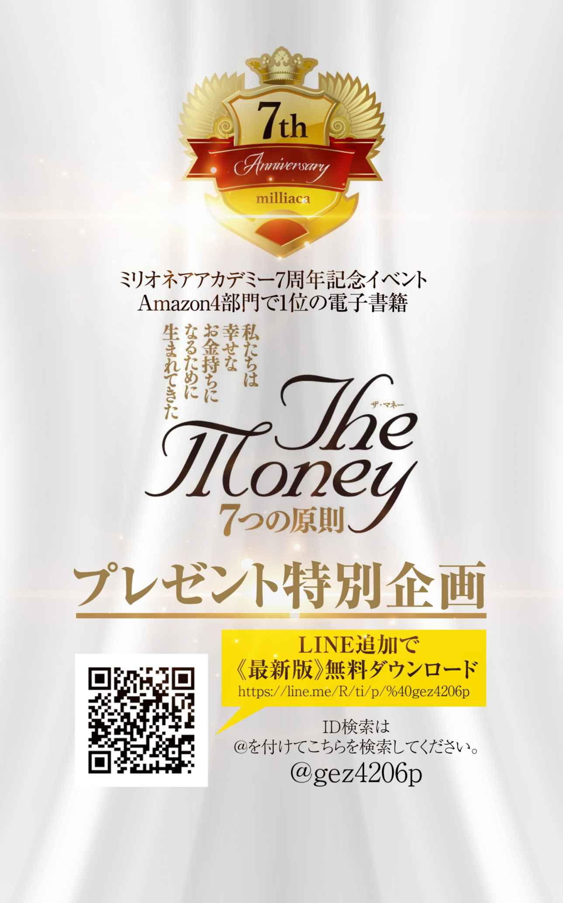
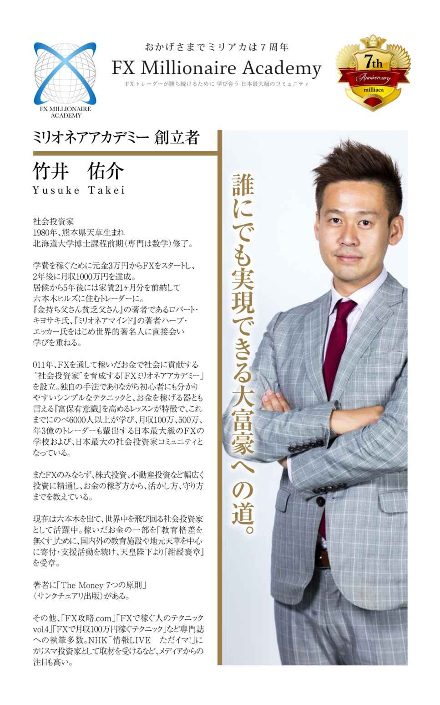

| ザ・マネー 7つの原則 第6章 お金の活かし方 社会投資 | |
| 竹井 佑介 | |
| NEXT LEVEL (2018) | |
第６原則 お金の 活 かし方 社会投資
ｃｏｌｕｍｎ５ ONENESS と ONE PIECE 最高の先生は誰？ どこに？
うえでとても大事な鍵になっています。
そして次の第６原則ではいよいよ、なぜ私たちは資産を構築しなければならないのかということについてお話していきたいと思います。
よく「私はお金の亡者にはなりたくない」、「そんなに稼いでどうするの？」ということを言う方がいらっしゃいますが、こういう方たちは自分のことしか考えていないためこういった言葉が出るのではないかと思います。第２原則の富保有意識のところでもお話しましたが、まずは自分の生活を安定させることから全てが始まります。そこも、ままならない状態ですと愚痴が出たり、他人の足を引っ張ったりしてしまいがちです。つまり生活が安定しないと心も安定しないということです。もっと言ってしまえば心が安定していなからこそ、生活も安定しないということです。そして富保有意識がアップするということは心の器が大きくなり、より広範囲の面倒をみるようになっていくということです。実際富保有意識のレベルをおさらいしてみると、
レベ
ル
１
生活の安定
レベ
ル
２
自己顕示（アピール）
レベ
ル
３
自己成長
レベ
ル
４
家族、親族の生活の面倒をみる
レベ
ル
５
社会貢献
レベ
ル
６
地元への貢献
レベ
ル
７
次世代への貢献
このようになっていました。この第６原則のところでお伝えしたいの は レベ ル ５以上のところになります。社会貢献、地元への貢献、次世代への貢献ということです。
社会投資とは理想の未来を現実化させるスピードを加速させることです。
特に私は教育格差を無くすことが全ての問題の解決手段だと確信していますので、私は教育分野の方に社会投資しています。逆に言えばもっと社会投資したいからこそそれが自分自身の稼ぐ原動力、理由になっています。
ここでは読者の皆さまにも考え方をシェアすることで私と同じように稼がなければならない理由を持って頂ければと思ってお伝えさせて頂きます。
お金というとはじめに浮かぶのが「稼ぐ」ということではないでしょうか？それで事業を起こそうとしたり、トレードをしようとしたり、様々な投資に挑戦してみたり。しかしながら実はこの稼ぐことよりも使う方が難しいことはご存じでしょうか？
これまでの話を理解していればピンとくる方もいらっしゃるかと思いますが、トレードや事業、もしくはサラリーマンとして大きくその年で稼げたとしても、ただの無駄遣いではなく節税をしながら資産構築をしなければ手元にお金は残りません。また日本は予定納税の国でもありますので昨年稼いで支払った税金の半額をあらかじめ分割で納めるという制度があり、余計に手元から現金がなくなることになります。
そのため大きく稼いだ時こそ、まずは節税を考えることです。余計な見栄で身分不相応な高級ブランド物を買いあさったり、高級車を買ったり、高級物件に住んでみたりするのはその後にしなければなりません。
ちなみに私自身もファッションが大好きですので高級ブランド物の服も時に購入したりしますが、その場合もほとんどがアウトレットなどのセールの時などに８０％オフなどの品を始めほとんどが５０％以上の割引のものしか買いません。高級車に至っても節税と資産性を兼ねて限定のフェラーリやランボルギーニのように節税とプラス値段が下がるどころか上がっていくようなものも視野に入れていましたが、チャイルドシートが乗らないという理由でやめた過去があります。お金持ちの人たちが何台も乗りもしない高級車を持っているのもコレクターという面もあるかもしれませんが、こういった車は売りたい時にも比較的早めに買い手が現れることが多いため、「節税＋資産保全」の意味合いもあります。
また自宅もオフィスとして活用することによって家賃の一部を経費とし節税することも出来ます。同様に不動産を購入したり、保険に入ったり、共済に入ったりしながら資産防衛と構築を行っていき、ましてや自分が亡くなった後のことまで考えて相続対策まで行います。
使い方を一歩間違えるとその後多大なる損失があなたに降りかかってきます。ただその使い方を大切な仲間たちに食事をおごったり、日頃の感謝を込めてプレゼントしたり、自分やチームの学びに活用したりすることでより人のつながりが太くなり、そのお金が活きてくることになります。逆にお酒を必要以上に飲んで派手に騒いだり、ドラッグに走ったりしてしまう方もいます。
つまり、お金は稼ぐよりも使う方が更に難しく慎重に行う必要があります。
「偽」という漢字をみてみると、人の為とは実は「偽」であると言っています。実際にどうなのでしょう。この話をしていくにあたって私の２１歳の時に行った初海外旅行であるインドでのバックパッカー中に体験した話をしたいと思います。
当時２１歳の頃の私は広島大学の学校教育学部の学生でありつつも、このまま先生になってしまったら見聞が狭すぎて子供に語れることが少なすぎるという危機感を抱き１年間休学をしました。そして日本中を旅して回ったりする中で朝４時に起きて教会を掃除させて頂きながら聖書について教えて頂いたり、いろいろな仕事に挑戦してみたり、音楽活動してみたりしたものの何か満たされないものを感じていました。そして休学期間も残り３か月となったところで海外に行こうと思いバックパッカー小説のバイブル沢木耕太郎さんが書かれた『深夜特急』を読みふけりました。その本の中で圧倒的に面白かった国がインドでした。そしてこの１月末という時期はローシーズンでチケットも運良く８万円ちょっとで手に入ったこともあり、３万円ちょっと（ほんとにちょっと）の現金を握りしめてインドに向かいました。
そこでバスの狭い荷台に２人で寝させてもらうことで激安にしてもらったり、ヒッチハイクをしたり、食堂や駅でホームレスの人たちと密集して寝たり、世界遺産のアジャンター石窟寺院では入場料が高すぎるので地図を見て、正規の入り口ではなく山を越えて川を超えて裏側から入ろうとして警備員に銃を向けられるも交渉して格安で入ったり、危ない地域に行き過ぎて監禁されてしまったりと本当に数々の刺激的で忘れられない経験をしました。他にも船の上で銃を向けられ身ぐるみはがされそうになったりと、本当に書ききれないほどの日本では信じられないような体験をしました。もちろんたくさんの親切なインド人やバックパッカーの同志たちから食事をご馳走してもらったり、泊めてもらったりと助けてもらったことも多々ありました。しかしながらその中でも今でもダントツに印象に残っている体であります。
それはある村で見た衝撃的な光景でした。数々の物乞いやストリートチルドレンをみてきていましたのでちょっとしたことでは驚かないようになっていたのですが、ある少女たちとの出会いは本当に驚きました。その少女たちは皆、手首から先がありませんでした。なぜそんなふうに手が無いのか聞いてみると皆一様に親に切り落とされたと答えました。そしてそれを見世物にしてお金をもらいながら家族は生きていたのです。さすがにこれには衝撃を覚えました。選択肢が無い子供の頃からこのような境遇を強いられているというのは正直この時はかわいそうだと感じてしまいました。
そこで自分に出来ることは無いだろうかと考え、日本の「ぶんぶんぶん はちがとぶ」の歌を教えることにしました。最初子供たちは恥ずかしがっていたのもあったかと思いますが、歌えないと拒んでいました。しかし一人の子供が覚えて歌ってみて、チップを観光客からもらった瞬間に他の子供たちも教えてくれとせがんできました。
つまり、これまでは見世物になるという選択肢しか知らなかったのが、他の可能性を知ったということです。そしてこの時、もっと自分に教えられることがあれば、子供たちの可能性を広げられるのではと思うようになりました。これが私にとって教育に真に心から貢献したいと思い始めたきっかけでもありました。つまりその子供たちの為にやりたいというよりも、自分自身がやりたいと思ったということです。この違いは非常に大きいと感じています。内から出てくるワクワクを超えた燃える使命感のような気持ちで事に当たることが出来れば様々な外側からの力も引き寄せて働いてくるのではないかと思います。その意味で人の為にやるというよりはこの内側から沸き起こる使命感の欲求を満たすためにやっており、更には喜んでいる姿を見ることに更なる大きな喜びを感じられることにエネルギーをもらい、本気で取り組むことが出来るということです。これこそ嘘、偽りのない気持ちではないでしょうか。
今では教育に対する思いもより深くなり、教育とは子供たちはじめ人々の可能性を広げ、夢を持ち、夢を叶え、また互いの夢を応援し合うためにあると考えています。この分野に私の残りの命の時間を活用して、燃える使命感の元、今回の著作をはじめとして世の中にこれまで学ばさせて頂いてきたことをお伝えしていきます。
何よりまずは自分で出来ることはないか、周りで困っている方はいないだろうかとみつめてみることから初めてみてください。
この内からの欲求がそのまま社会投資に結びついていき、様々な力があなたの創造を超えて集まるようになってきます。
ここからがこの第６原則の本題です。投資や事業で稼いだお金を守り抜いて出来た余剰金を使って世の中をより良くする社会投資をする段階に入っていきます。
社会投資とは理想の未来を現実化させるスピードを加速させることです。
では理想の未来とはどのようにして探っていけば良いのでしょうか。その答えは実は仕事の中にあります。どのような事業や投資、そして仕事であれ、それらを成功に導いていく中で世の中で起きていること、起きてきた歴史、そしてそれらを元にして未来を読む能力に長けていきます。
世の中が見えてくるようになるからこそ、働き方、仕事の仕方などより洗練され、どういったところに問題があるのかが見え、その解決をすることで仕事のレベルが更に高いものになっていきます。また先が読める、つまり理想の未来と現実の問題点とのギャップを知ることで投資でも成功することが出来るようになります。もちろん私のように仕事以外のところで体験した様々な体験が元で社会投資のヒントを得ることも多々あります。ただし自分自身のビジネスや投資スキルが上がれば上がるほど、世の中の問題がより明確になってきますのでより的確な場所に社会投資出来るようになります。全ての未来を読むことはほぼ不可能でしょうが、ご自身が関わってこられたお仕事や投資の中で見えてきた現実の問題を解決するために、社会投資を行うということです。そして忘れてはならないのがシンクロは神様からのメッセージであるということです。
私の場合はインドでの体験が軸になりましたが、そもそも学部の広島大学時代は学校教育学部を卒業しており小中高の教員資格を持っています。そしてたくさんの先生たちによって、人生で道を踏み外すことなくこれまでやってこれたことには今でもとても感謝をしています。そして現在トレードを教えるミリオネアアカデミーという学校も主催させて頂いており、私の人生において教育という分野が非常に深い縁があることが分かります。
つまり「教育を通して命を使いなさい」というメッセージをもらっているため、そのメッセージの通りに突き進んでいるということです。
ちなみに私は投資で稼いだお金を社会投資していくことを推進するために、社会投資家普及協会 （ http://socialinvest.or.jp / ）を創設しました。当初は様々なアイデアを募集しながらビジネスなどにも投資を考えていましたが、ほとんど頂くビジネスアイデアに対してピンとくるものがなく、結局ふたを開けてみれば社会投資させて頂いていたものはフィリピンのセブ島にあ る DAREDEMO HER O 、日本の教育格差を無くすことを目的としたオンライン 塾 manavi e など教育関係のものばかりでした。
そしてやりながら気づいていったのですが教育格差を無くすことがこの世の中にはびこる不公平を取り除くことが出来るということでした。実際、フィリピンでは選挙の前になると貧困層の地区にバスケットボールコートや雨宿りを出来る場所を作り、ＴＶなどこの地区は持っている人がいないため、「何て良い人なんだ！」と思い安易にその人に投票します。
しかし、いざ当選するとその場所を柵で囲ってしまい貧困層の地区の人たちが使えないようにしたりすることはザラにあります。教育格差により情報格差が出来、しかも貧困層の人数は圧倒的に多いため、あえて情報を与えないことで政治に利用されるという悪循環を断つためには、やはりここでも教育格差を無くすことが必要だと確信しました。
このようにして人によって社会投資の内容は異なるかと思いますが、やるべき社会投資の内容を見つけるためにこれまでのシンクロである神様からのメッセージに、今一度耳を傾けてみてください。これまでの人生で出会った共通点を探ることであなたが目指すべき社会投資の形がきっと見えてくるはずです。
そして、それが見つかればあなたが稼がなければならない理由となり、更に富保有意識が上がり、より精力的にあなたが使命感を持って命を燃やして物事に取り組むようになるでしょう。
この社会投資が稼ぐ理由になり、更に仕事やお金を稼ぎ資産を構築する原動力となっていきます。そして世の中に対する見聞も深くなり、その社会投資の内容を深めていくようになります。まさにすべての物質が気の遠くなるような長い時間をかけて結晶化し宝石化していくように、あなたの思いと行動はより純粋化されていきます。
だからこそ純粋さの究極である宝石のようにあなたの魅力は増し、世代を超えて人々が集まるようになり、あなたが仮に亡くなったとしてもその魅力は著作物や口伝によって永遠に残り語り継がれていくのではないでしょうか。
そして人が見に着けている最高の宝石は志です。まさに一生をかけて命を賭していくのが志。この志について、私の尊敬する世界一の宝石商でアルビオンアートの有川一三社長がとても素晴らしい定義を与えてくださっています。
「人生において偉大なる達成を果たさんとすれば、その鍵は志にある
志は人に優先し、物に優先し、金に優先し、
場所に優先し、時に優先し、運に優先する
そしてその志が高く深く強く純なる時は
それが大いなる地場を創り、それらのすべての要素を引き寄せて結晶し
偉大なる達成を果たすのである
故に志は真に天の神々が天上にて
感嘆絶賛するものでなくてはならぬ」
いかがでしょうか。私ははじめこの言葉をお聞きした時、非常に感動しました。共通の九州の大先輩から、「この方から宝石を買いたいと思っているんだけど竹井くん一緒に会わないか」とご紹介頂いた有川一三さん。そこでした食事会は今でも忘れられません。宝石の話から人生、歴史、哲学、生きる意味、志にいたるまでその内容は多岐にわたるものの、それぞれが深く、とても贅沢な時間を過ごすことが出来ました。
それに感動した私はトイレに立つふりをしてお支払いしました。実はその価格は数十万円もしてとてもびっくりしましたが、それ以上の価値があると思い喜んでお支払しました。何よりこれだけ贅沢なお時間を頂き、更にご馳走して下さろうとしていた有川さんへの感謝の気持ちがあふれ出てきて本当に涙が出そうでした。そして帰ろうとした時に「竹井くん、僕に３日ください」と言われ、「これから竹井くんは世界で活躍するでしょ。だったら日本のことを案内し説明できなければならない。つまり京都と奈良についてしっかりと勉強しておきなさい」とお教え頂きました。その後、２月に京都、奈良の仏教建築や美術、日本の歴史を現地で懇切丁寧に説明してくださり、座禅を通して意識が外から内に入り冬の寒空を忘れ、それから意識を解放し空中に自由に気持ちよく揺蕩（たゆた）い自分の思い通りになる経験を頂きました。そこで私の志でもある「人は皆幸せであることに気付いて頂くこと」についてお話させて頂きました。全ての境遇はあなたにとって最も分かりやすい神様からのメッセージであり、常に目をかけられ愛されているということに気付けた瞬間に深い幸せを感じることが出来るからです。また有川さんには様々な雑誌などもご紹介頂いたのですがその中でも口コミだけで１０万部も売れている「致知」には非常に感動し、その気持ちをお手紙で伝えたところ、何と致知出版の藤尾社長との会食をセッティング頂きました。
このようにして互いの志を軸にして、たくさんの素晴らしい尊敬すべき方々との時間を共有させて頂いてきました。そしてこれが次の 「 Know Wh o 」につながっていきます。
世の中にあふれている情報はノウハウに少し偏りすぎているのではと思います。２０００年に入りインターネットは普及し世界中の人たちと瞬時に連絡が取れる時代が到来しました。ノウハウの多くはインターネットで調べることが出来ますし、特に英語まで使うことが出来れば、日本語よりも格段に多くのことは学部ことが出来るのではないかと思います。
何よりインターネットが生まれフェイスブックなどのＳＮＳが生まれたことによって、自分自身を発信することによって、より多くの人とつながることが出来る時代が来たということです。そしてそれこそがインターネットがこの世に生まれた意味ではないでしょうか。この時代に生まれた我々はより国境の壁を越え世界中の人たちとつながっていくチャンスに恵まれています。
また、本当に生きた情報は最先端で活躍されている仲間や先輩たちから得ることが出来ます。この本もそうですが私と出会って下さるきっかけであり、何より私にとってもより多くの皆さまとのご縁を頂き、より多くのことが学べるチャンスが得られると、とってもワクワクしています。
そして夢を叶えようと思った時に、計画を達成しようとした時に、志を果たさんとした時に一番はじめに考えなければならないのは誰とチームを組んで実行していくかということです。
「自分の弱点を挙げ、それを得意とする人たちをチームに入れていくこと」です。
一人では仕事をするうえで完璧にはほど遠くなってしまいますが、多くの才能ある仲間たちと組むことで目標を達成できる確率はぐんっと跳ね上がっていきます。まさに「だって人間だもの」（相田みつをさん）、人の間で我々は生きているのです。
また世の中から自分の内側の精神世界まで理解を深めようと思ったら人との関わりがとても大切になってきます。そして大切にしたいと思えるような仲間たちが出来ることで我々は思い遣りを学び、人の心理を学び、人のニーズをとらえることが出来、求められているものを認識し提供し成功するようになります。
そのた め Know Ho w （ノウハウ）よりも多くの人たちの才能を互いに活用し合い、本にもまだ載っていないような情報を分かちあ う Know Wh o （ノウフー）の方が大切だと思います。
かのフォードの創業者ヘンリー・フォードもあるとき記者に対して「私はどんな質問でも答えられるから何でも質問しなさい」と言い、実際に全ての質問に対して答えてみせました。目の前にある電話を使ってそれが分かる人に電話をしたのです。このようにノウハウではなくノウフーを意識していることがとても大事です。そしてお世話になったその相手に対してお返しをしていく。つまり生きるということは一生をかけて恩返しをしていくことだということです。
フィリピンで一所懸命ビジネスを始めるきっかけになったのも、元々２０１４年１１月に英語留学でセブ島に行っている時に、ミリオネアアカデミーの会員様から「お陰様で１千万円以上稼ぐことが出来ました！良かったらお礼をさせて下さい」という連絡が入り、セブ島で対談を撮らせて頂くことになりました。その 際 iPhon e で撮ろうとしているのを観て、近くにいた入月さんが「カメラマンを呼びましょうか？」と言って下さり無料で撮って編集までして頂きました。
そのお礼がしたくて日本に来られる度にご馳走したり一緒に飲みに行ったりする中で仲良くなり、今度はフィリピンに遊びに来るように言って下さいました。そして実際に肌でＡＳＥＡＮ諸国Ｎｏ．１の成長率の勢いを感じフィピンで仕事をすることに決めました。
このように人を通して繋がり導かれていくことが多く、その意味でノウフーを意識して普段の生活からひとりひとりとの出会いと、その相手の何気ない一言に対しても全てメッセージとしてとらえ敏感であることがとても大切なのではないでしょうか。
まとめるとノウハウからノウフーへ、つまり人をより意識して大事にして、つながりを作っていき成功し、ひとりひとりへの恩返しと社会投資を一生かけて行っていくことが人間界で生きる基本なのではないでしょうか。
社会投資というとお金を稼いでからしか出来ないというイメージが出来ているかもしれません。実際、お金を稼いで、節税しながら銀行の借り入れのレバレッジなども活用して資産構築し、相続対策まで行った後に社会投資をしていくというのが基本ではあります。しかしその逆の場合もあるということをお伝えしていきたいと思います。
インドの孤児院にボランティアで行った時のお話です。子供たちと遊んだり、ごはん食べたりしながら一緒に時間を過ごしとても楽しい貴重な時間を過ごすことが出来ました。しかしよくよく子供たちや施設の方のお話を聞いてみると、自分以外の肉親が全てエイズで亡くなっていたり、捨てられてきたため本当の親の顏が分からなかったり、幼児虐待がひどすぎて笑えなくなってしまったりと、実に様々な問題を抱えていました。話を聞いて心を痛めている中、施設の方に何を求めているのか聞いてみると、返ってきた答えはお金でした。結局のところ施設が運営できなくなってしまうと子供たちはそのまま路頭に迷ってしまいます。もちろん中にはしっかりと仕事をして成功していく子供も出てくるのでしょうが、大半は何も知らないうちに大人たちから麻薬密売なフォ犯罪の片棒を担がされたり、少女売春などの世界に身を落とされたりしてしまいます。
それらを防ぐためにも子供たちをかくまえるような組織が存在し維持されることは非常に大切なことです。しかしながら、全ての面倒を診ることは不可能です。そのためこの本を通して、人々にお伝えし考えて頂くきっかけを与え、また皆が少しずつご自身の納得される場所へ支援の手を広げて下さるようになればと考えています。
もちろん中には子供たちには汚い恰好をさせて、わざと人の同情を買い寄付させて、子供たちを逆に食い物にしているようなところがあることも事実です。そういったところとしっかりと見極めながら、支援していくことが非常に大切です。
このような経験を通して「お金があればもっと支援出来るのに、発言力があればもっと皆がそのことに意識を向けてくれるのに」という思いが原動力となりより精力的にパワフルに仕事に打ち込める原因にもなります。
また過去にホームレスを少しだけした経験があるのですが、その時にやさしく声をかけて頂いたり、ご飯を分けてもらったりした時の喜びは忘れようもなく、今で は BIG ISSU E のスポンサーをさせて頂くことでホームレスの方々の就業支援を行っています。
このようにボランティアの経験や過去の実体験を通して自分に出来ることを最大限にやりたいという思いから、社会投資を進めていくことももちろんあります。むしろこちらがよく言われていることではないかと思います。
人は自分の出来ることしか出来ません。だからこそ自分自身のレベルを上げていこうと思いますし、人の力を借りようともします。
お金とは、本来あなたが持っている性質を助長させます。
だからこそ、ただお金稼ぎだけを目的にするのではなく、その先の使い道である社会投資まで考えて志を立てて突き進んで欲しいという思いがあります。資産構築出来た後の社会投資の楽しさ、喜んで頂ける喜びをバネに一緒にたった一度の人生を生きていければと思います。
今すぐ何かしたいと思った方に是非やってほしいのは隣の方、周りの方に笑顔をふりまくということです。仏教の世界には和顏施（わがんせ）という言葉があり、人に和やかな笑顔を見せることが施しのひとつで徳を積むことになるというお話があります。是非人の心をほぐしてあげる心のマッサージ師にあなたの笑顔を通して取り組んで頂ければ幸いです。
何よりあなたにも経験があるでしょう？腹が立ってイライラしていた時に屈託のない子供たちの笑顔を見てふっと心が軽くなった経験が。あなたの今出来ることから是非社会投資に取り組まれてくださいね。
ワンネス （ onenes s ）という言葉を聞いたことがある方もいらっしゃるかもしれません。すべてはつながっていてひとつという意味です。その意味で今起きている出来事、出会う人々、生まれた時代含め全てに意味がありつながっており、分かりやすく言えば神様からのメッセージではないかと私は感じています。となるとその全ての出来事、出会う人々、過去の歴史を含めた時代全てがあなたに進むべき道を示してくれており、全て先生と言うことが出来るのではないでしょうか。
その意味で最高の先生はあなたが認識できるもの出来ないものを含め全てであり、「どこに？」と聞かれれば「こにでも」ということが出来るのではないでしょうか。
大ヒットしている漫画で私も大好き な ONE PIEC E （ワンピース）がありますが、このひとつなぎの秘宝 （ ONE PIEC E ）を求めて数々の海賊たちが群雄割拠で皆それを求め突き進んでいます。私はこのタイトルを観て頭に浮かんだことは、その秘宝はいわゆる「モノ」ではなく、世界をくまなく周り終えた時に、その旅の中で出会ってきた様々な人とのつながりこそがまさにひとつなぎの秘宝であり、それぞれひとりひとりがひとつのピース （ ONE PIEC E ）となっているのではないかということでした。作者の方に怒られてしまいそうですが、まさに私の短い人生において感じられるのは、人生とはまさにひとつなぎの秘宝 （ ONE PIEC E ）をつくることなのではないかと思います。
そしてひとつのピース （ ONE PIEC E ）だからこそ、上、下、左、右の全方向とのつながりがあり、支え合い、そして繋がっている （ ONENES S ）のではないかと思います。全てから学び、全てを支える人でありたいものです

